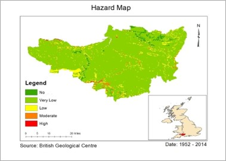
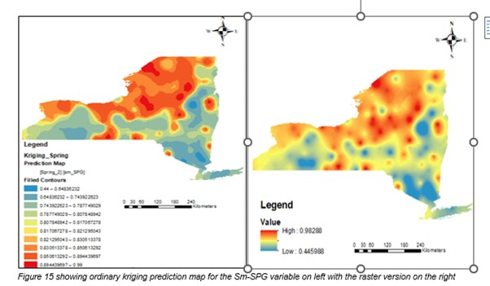
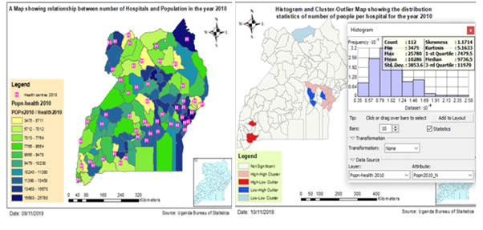
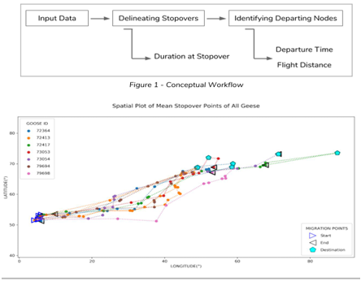
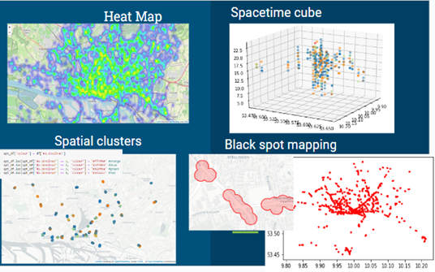
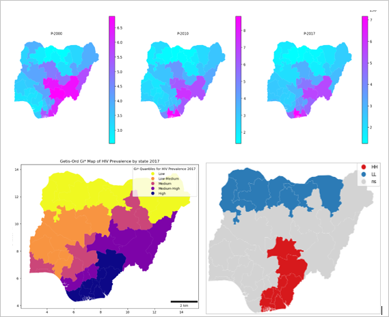
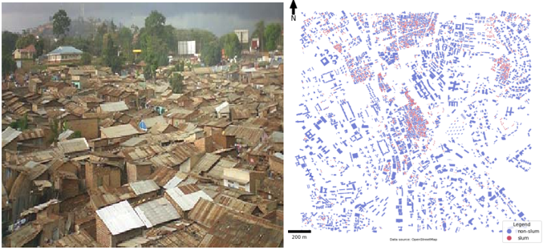

Landslide risk mapping using Geographical Information Systems (GIS) and Multi
Criteria Decision Analysis (MCDA)
Landslides have frequently occurred in several hilly settlements all over the world
causing a great impact on life and the economy at large. The uncertainty of their occurrence has continued to
hurdle mitigation and response mechanisms in landslide-prone areas (Taskin Kavzoglu et al., 2013). In consideration of elements of the environment
affected by the magnitude of landslides, this paper discusses the application of Geographical Information Systems (GIS)
and Multi-Criteria Decision Analysis (MCDA) approach to mapping the extent of landslide hazard risk. Using Somerset County
in South-West England as a case study, landslide hazard indicators (lithology, slope, and water level in the rocks by the
the rainfall event) and landslide vulnerability indicators (population, buildings, transportation, and green area) were
in each aspect combined after multicriteria decision analysis to derive respective hazard index map and the landslide
vulnerability index map. The resultant landslide risk index map derived as the product function of the susceptibility index
and vulnerability index gives the representation after reclassification, the final landslide risk map is classified into
into indicative classes of high (99%) moderate (0.5%) and low (0.5%) showing the level of landslide risk in the study area.

A GIS study on environmental and social inequalities in California
Understanding the disparities in toxic exposure among subpopulation groups (e.g social, ethenic and demographic)
is one of the first ways to breakdown environmental injustice (Joshua B. Fisher et al., 2006). With the current rise in awareness of social injustice and police brutality
across the United States of America, there is need to investigate and bring to light all other inequalities with regards to health risk,
social disparities and neighbourhood segregation (E. Suel et al., 2019). Using spatial methods, we assessed inequalities and identified "hotspot" areas in the city,
average for people of colour, lower-income households, and the southern region. It was found that areas of high ground water threat incidence
and hazardous waste coincide with hot spots for low birth weight and cardiovascular disease prevalence. This study answered investigated the
following questions: 1) Is there a distribution pattern across the study area for the racial minorities, median family income, and white population?
2 ) Do these local clusters share spatial similarities with the pollutants? 3) Do the clusters identified in question 1 display some similarities
to low birth weight and cardiovascular disease hotspots? You can see the editorial plan here.
and the cartographic representation of the project results in the link below.

Geostatistical Characterisation of seasonal Soil Moisture Variability
The Variation of soil moisture matter over distinct spatio-temporal scales and under changing climatic conditions has in recent times become a focus of interest
for understanding underlying spatial processes responsible for soil water content variation (Vinit et al., 2018). Geostatistical approaches provide ways of characterizing and quantifying soil moisture variability
in space and they are increasingly used as inputs to hydrological and meteorological models (A. Zarlenga et al., 2018). This project undertakes a geostatistical analysis of the 5cm soil moisture percentile parameter
across to two seasons (spring and summer) for the year 2019 by employing several exploratory Spatial data analysis tools and interpolation methods to characterize soil moisture variability across
New York in the United States of America (USA). Both Exploratory data analysis and Exploratory Spatial data analysis of the soil moisture variable across and New York state, USA were implemented.
Exploratory Spatial data analysis tools implemented include; the Regional histogram which enables graphical visualization of the dataset, Voronoi maps that facilitate exploration of local variability,
the local Moran's I statistic that enables identification of spatial outliers and statistically significant local clusters and the Global Moran´s I statistic that helps investigate spatial
autocorrelation in the study area. Interpolation techniques followed such as; Inverse distance weighting that uses known values surrounding an unsampled location to predict unknown locations. The other
technique is kriging that produces a prediction surface from sampled points of a continuous variable.
Results from exploratory spatial data analysis provided an overview of the spatial variability. Results from interpolation techniques included interpolated or prediction surfaces of the soil moisture variable
for the different seasons and were compared. You can view the project results by following the link below;

A GIS Based Analysis Showing the Relationship Between the Number of Hospitals and Population in Uganda for the Years 2002 – 2010
According to USAID’s Maternal and Child Health and Nutrition (USAID MCHN) Activity report, many public hospitals and healthcare facilities in Uganda
are characterized by overcrowding, particularly those providing emergency response in obstetric and gynaecological services in urban areas. In most cases, those in rural areas travel long distances to access
medical services. As per Uganda’s Ministry of Health, the health structure is based on a referral system. Each district is at least supposed to have all the four grades of health centres which operate in
the smaller units of administration i.e. health centre (HC) IIIs, HC IVs, regional referral hospitals (RRHs), and national referral hospitals (NRHs). Overcrowding is experienced at almost all levels of the health structure.
Understanding the distribution pattern of health centres in relation to the population is significant in understanding the causes of overcrowding to support and design appropriate solutions and also improve service delivery
in areas that have insufficient health services (Kasirye et el., 2004).
This analysis is based on Uganda’s districts GIS data sets of health centres and population census in 2002 and 2010. Before 2010, Uganda was divided into 112 districts with the capital city being Kampala. This exercise focused
on districts because they are the main administrative units in Uganda. The first part of this paper analyses the number of hospitals in each district unit considering the health dataset for the year 2002. The second part analyses
the relationship between the number of hospitals in each district and the resident population in the year 2002. The third part analyses the distribution of hospitals considering the existing population for the years 2002 and 2010.
Results show an improvement in health care services in the east in 2010 compared to the year 2002. Overall, not statistically significant spatial autocorrelation is seen across the country in both 2002 and 2010 meaning that there
was high spatial variability in distribution of hospitals in relation to the population.
The final results and the visualizations of the study can be found here

Analysing 'Flight Distances' of White Fronted Goose
Bird migration is a common phenomenon generally observed twice a year, mostly between liveable habitat and a reproduction environment (Drent et al., 2003).
White fronted geese hereafter ‘geese’ depict a similar pattern of migration, however being ‘capital breeders’ in nature, their breeding is influenced by ‘plant growth’ as a critical source of energy
(Spaans et al., 1999). Apart from various influencing factors, ‘distance’ and ‘time’ are the core components of migration studies. Teitelbaum et al., (2015) suggests that distance, timing and period
of migration gives a richer understanding of migration patterns, direction of movement, routes taken and physiological adaptations of birds. Continuing research has explored these traits in detail,
where Morbey & Hedenström, (2020) considered departure time, flight distance and travel speed to explore migration schedules; Moore, (1996) studied departure time from a stopover site and related it to
flight ranges and Kölzsch et al. (2018) formalised a migration network with stopover (nodes) that are linked by flight distances (links). In this study, we focused on exploring distance and time, to
realize how these core components are related to each other. ‘Flight Distance’ is the distance between potential stopovers during migration (Ojaste et al., 2019). This research focuses on whether flight distances
are affected by the time geese leave the stopover, and whether their duration at stopovers influences the following flight. We also explore the relationship between Departing Time and Flight Distances.
If you're curious about this project, You can View the implementation code in a PyQGIS environment. The link to the Project code
is
here and you can view the detailed project report by clicking the link below.

Integration of Floating Car Data with accidents, Open Street
Map and Weather Data for improving traffic safety
Traffic safety refers to the measures that are implemented to prevent accidents on roads (Y. Maqbool, 2019). In growing Intelligent transport systems, traffic data with
additional records gathered for example by police authorities, weather reports are communicated to a central database and assessed by an information system to derive traffic state conditions (T. Wang Hu, 2015)
Floating Car Data (FCD) provides traffic state information in road networks and its exploitation provides potentials for traffic and safety information services. This research is focussed on aiding the local police who are
engaged in traffic safety by providing better understanding to traffic accidents. The concern is on improving the traffic safety by exploring the accidents and lucky escapes with the use of past accidents, floating cars
and other relevant data. In this project, we have integrated the road traffic accident data (RTAD) and Floating Car Data (FCDA) to model and predict the accident patterns in major cities of Germany. Other relevant data like
like open street map and weather data are also used for spatial-temporal analysis and extracting more information from floating car data. The main aim of the project is to analyse the Floating Car Data to enhance traffic safety.
The main aim of the project is to analyse the Floating Car Data to enhance traffic safety. To achieve this, we divided our objectives as: 1.) Exploratory statistical analysis of past accidents data 2.) Integration of floating car
data with past accident data and other secondary data e.g weather, to explore the spatial-temporal pattern of accidents. 3.) Analyse the floating car data in relation to other covariates to extract the points of lucky escapes, over speeding,
black spots, hot spots and cold spots etc. 4.) Modelling of the selected variables obtained from exploratory statistical analysis to predict the trend and pattern of future accidents 5.) To provide python-based tools of the tasks completed to
use them for future analysis.
You can view the analysis notebooks, processed data and links to results by following here and you can view the detailed project report by clicking the link below.

A Geographical Analysis of HIV/AIDS Infection in Nigeria, 2000–2017
I am currently collaborating with Dr. Chinekwu Azuka Obidoa to produce a research paper showing the progress of the HIV pandemic in Nigeria. The First research paper was done to analyse HIV/AIDS Infection in Nigeria between, 1991–2001. This research paper will focus on 2000-2017.
The three objectives of this study are being maintained (1) to determine the geographic pattern of HIV prevalence rates in Nigeria, from 2000 to 2017 (2) to determine if the observed pattern of the epidemic is influenced by transportation factors, and (3) to examine the diffusion pattern of the epidemic.
I have presented in the notebook below some preliminary analysis. More analysis will be available as soon as we are ready to publish.
You can view the paper we are updating here and you can view the preliminary analysis by clicking the link below.

Mapping and detecting slums in Kampala Uganda.
Urban areas in developing countries are constantly faced with rapid growth of slums due to rural urban migration (Alberto Riveira, 2021). Uganda’s capital Kampala is currently confronted with an increased sprawl of slums, and this is hindering some physical planning efforts in the city.
Detection of slums and predicting future slum areas is a crucial step for physical planners and other stakeholders to formulate effective interventions(Richard et al., 2019) .
This script dives into some methods for mapping slums. Geographical information from open street map is used in this study, we obtained building footprints for areas around Katanga which is a slum suburb in Kampala town council. Computations were done to explore quantitative parameters derived
from building footprints with a goal of deriving slum regions and, a topology-based algorithm is applied to identify spatial relationships within Katanga slum area. The result is a map showing slum areas and this serves as an innovative solution for detecting slums, supporting urban planners in their development efforts.
You can view the analysis notebook by clicking the link below